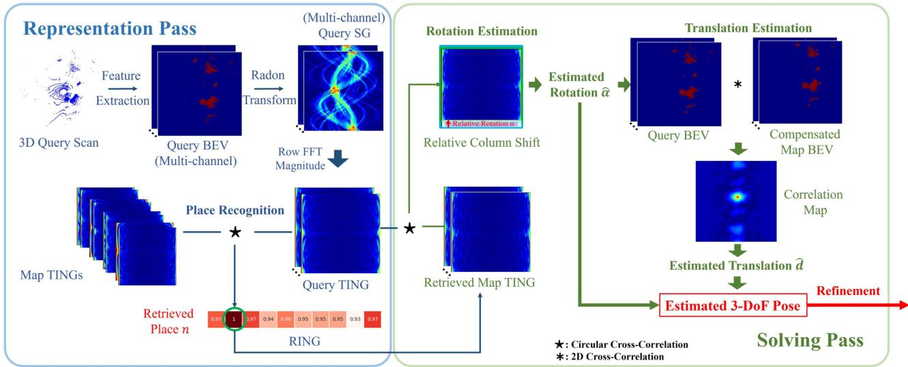
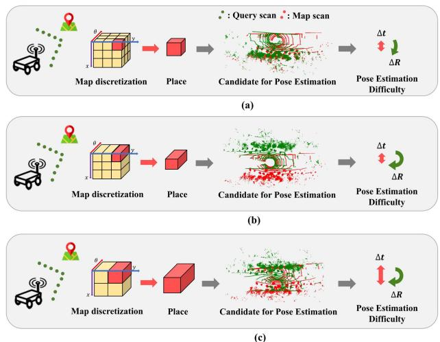
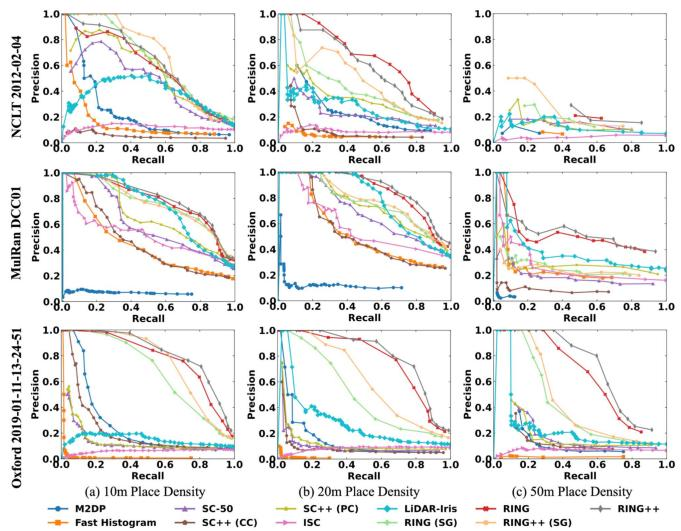

阶段 D · 激光主干 · Lesson 0093
激光回环（下）：旋转平移不变的地点识别
同一个路口，去的时候面朝东、回来的时候面朝南 —— 怎么让「像不像」这件事根本不受朝向影响？📐
🎯 主题：全局定位 · Radon 变换 · 圆互相关 · 稀疏扫描地图
👥 作者：Xuecheng Xu、Sha Lu、Jun Wu、Yue Wang 等（浙江大学）
📅 2023 · RING++: Roto-Translation Invariant Gram for Global Localization on a Sparse Scan Map
本节目标
读完你应该能：说清「全局地点识别」和「里程计」的区别；讲出 RING 这条表示为什么能同时做到旋转不变和平移不变；知道 RING++ 相对会议版 RING 增加了哪几样东西；并且能解释为什么它的位姿求解要拆成旋转、平移、精修三步。
和前面课程怎么接
直接接上一节 0092 （回环的两条路线与评价指标）、第一季 0014 课（假阳性铁律）与 0013 课（评测协议）。技术血缘上接第二季 0023 课（点云配准与 ICP）、0020 课（位姿图）。
1. ★ 先纠一个名字：这一篇是 RING++，不是 RING
★ 显示名与正文不符（本节必须交代清楚）
课程路线图给这一篇的显示名是「RING 」。但它的正文标题是：
RING++ : Roto-Translation Invariant Gram for Global Localization on a Sparse Scan Map
标题的第一个词就是 RING++。路线图的显示名漏掉了后面那两个加号。
判定依据（三条，都能在原文里找到）：
① 标题本身 写的是 RING++；正文明确区分了会议版与本文 ：原话说 In the preliminary conference paper [12], we proposed a method that utilizes a single-channel occupancy map… （在会议版论文中，我们提出了一个使用单通道占据地图的方法……），接着列举本文相对它做了哪些扩展——也就是说，RING 是那个会议版，RING++ 是这篇期刊版 ；实验里同时出现四种变体 ：RING (SG)、RING、RING++ (SG)、RING++，并在同一张表里逐项对比。如果 RING 和 RING++ 是同一个东西，就不可能出现这样的对照。
结论：读这篇的时候不要把它当成 RING 的复现或介绍；它讲的是一个在原版基础上做了实质扩展的新方法。 下一节（第 4 节）会专门讲「++」到底加了什么。
顺便把原文里两处 OCR 问题也交代一下（规范要求：改了要说改了什么）：
Fig. 1 的图注里出现了 GLOCAL 这个词，按上下文应为 GLOBAL （global localization pipelines），属于字母识别错误。
正文多处把 roto-translation invariant 印成了 roto-translationinvariant （中间缺一个空格），这是排版/OCR 造成的连字，不影响理解，引用时按正常的两个词写。
2. 它要解决什么：全局地点识别
先把这件事和上一节划清界限。
里程计（odometry）回答的问题
「我相对上一帧 移动了多少？」它有一个天然的初值：上一帧的位姿。所以它的搜索范围很小，是一个局部问题。
全局定位（global localization）回答的问题
「我在整张地图的哪里 ？」它没有任何初值 ——因为你可能是从完全不同的方向、完全不同的位置回来的。所以它必须在地图覆盖的整个位姿空间里搜索。
原文把这件事的形式化写得很整洁。地图是一个「扫描地图」$\mathfrak{M} \triangleq \{P_i, T_i\}$——一个由地图扫描 $P_i$ 及其已配准位姿 $T_i$ 组成的数据库。目标是估计查询扫描 $P_Q$ 的位姿 $T_Q$。整个流程固定分成两步：
① 地点识别 ：从地图里找出与查询扫描重叠最大的那一帧 $P_n$ —— 说明 $P_Q$ 就采在 $P_n$ 附近位姿估计 ：算出 $P_Q$ 与 $P_n$ 之间的相对位姿 $T_{nQ}$，再把它作用到 $T_n$ 上，得到 $T_Q$
原文特别强调这个能力的用处：它对 SLAM 里的回环与地图合并是关键的，对导航系统里的重定位也是关键的。
那难在哪里？原文讲了两层困难，而且这两层是互相拉扯 的：
困难一：大视角差异
原文说，当查询轨迹和建图轨迹不同时，同一个地点的两帧可能重叠但位姿差很多 ——原文举的例子就是相反方向（opposite direction） 。
于是地点识别的挑战变成：要构造一个表示，让「同一个地方、差了很多位姿」的两帧仍然看起来相似 。
困难二：地图要稀疏
从存储和效率出发，地图的地点密度 $|\mathfrak{M}|$ 越稀越好。但地图一稀，查询帧和检索到的地图帧之间的平移差就变大 。
而原文指出，Scan Context 那类方法为了做到平移不变，是依赖城市道路假设做增广 的；视角差异一大，这个不变性就失效了。
两者如何互相拉扯
地图稀疏 → 平移差大 → 需要真正的平移不变；
而一旦表示对位姿完全不变，位姿估计就没法做了 ——因为它把需要求的量也一起抹掉了。
最后这条是这个方法的精髓所在，原文用了整整一小节来讲它：不变性和可解性是一对矛盾。 如果你把所有位姿信息都从表示里抹掉，检索是方便了，但「它到底转了多少度、平移了多少米」就再也算不出来。
所以原文的做法是同时保留两套表示 ：一套对位姿不变 （用来检索），另一套对位姿等变 （用来求解）。这正是它被称为「框架」而不只是一个描述子的原因。原文还正式定义了两组概念：
用人话说：等变 就是「输入怎么动，输出就按同样的规律动」——信息虽然变形了，但没丢；不变 就是「输入怎么动，输出都不动」——信息被彻底抹掉了。前者能反推动作，后者只能判断「是不是同一个东西」。
互动判断
假如你设计了一个「完美的」地点识别描述子：不管机器人朝向哪边、站在哪里，同一个地点的描述子都一模一样 。这个描述子能直接用来做回环吗？
可以直接用于回环校正
只能认出却算不出位姿
会让识别准确率变低
3. ★「旋转平移不变的 Gram」到底是什么
先澄清一个容易误会的点
标题里的 Gram ，是 TING （Translation-Invariant rotation-equivariant Gram）与 RING （Roto-translation-Invariant Gram）这两个名字里的那个 G。
但原文并没有真的去构造一个「点对点的 Gram 矩阵」。 它真正的构造路径是四步：BEV → Radon 变换 → DFT → 圆互相关 （下一段就讲）。
所以本节的封面图里那两张「行与列都是点、格子里填关系量」的表格，是用来把「关系」这个思想画出来的示意 ，不是原文的算法步骤。这一点必须先说清楚，否则后面的公式会对不上图。
同一个地方、两个朝向：点与点之间的关系表却完全一样
① 同一个房间，机器人朝东
朝东
② 同一个房间，机器人朝南
朝南
0.0
1.2
2.4
1.2
0.0
1.5
2.4
1.5
0.0
0.0
1.2
2.4
1.2
0.0
1.5
2.4
1.5
0.0
一样
机器人怎么转、怎么平移，这张表都一样
这张图在画什么： 上面两格是同一个房间的俯视图，房间里有墙、有门、有一张桌子和两把椅子；区别只有一个——左边那格机器人朝东 ，右边那格机器人朝南 。下面两张方表是同一个「关系表」的示意：行与列都是这个房间里的点，格子里填的是「这两点之间的距离相关量」。怎么看这张图： ① 先比较上面两个房间——它们是同一间屋子 ，只是机器人站的方向不同；② 再逐格比较下面两张表——它们一模一样 ，连对角线上的 0.0 都一样；③ 最后注意中间那条「一样」的虚线标注：这就是整张图想说的话。要记住的一句话： 它比的不是「点的坐标」，而是「点与点之间的关系」——所以朝向不影响。 图注说明（做了哪些简化）： 这两张表是为了把「关系量」这个思想画出来而作的示意，不是原文的算法步骤 。原文并没有真的构造一个点对点的 Gram 矩阵；它实现旋转平移不变性的真实路径是下一段要讲的四步：BEV → Radon 变换 → DFT → 圆互相关。
为什么非要用「关系」而不是「坐标」？下面这张图把两边的差别并排放在一起。
为什么坐标类描述子做不到，而关系类可以
坐标类描述子
机器人朝东
0.9
1.4
0.2
3.1
0.7
机器人朝南
3.0
0.4
2.2
0.6
1.8
同一块地方，两组数字对不上
朝向一变，描述子就完全不同
关系类描述子（Gram）
机器人朝东
0.0
1.2
2.4
1.2
0.0
机器人朝南
0.0
1.2
2.4
1.2
0.0
同一块地方，两张表对得上
朝向一变，关系表原封不动
比的不是「点的坐标」，而是「点与点之间的关系」
这张图在画什么： 左右两联在对比两类描述子。每一联里有上下两行，分别对应该地点在两个不同朝向下采集到的结果；左边那一列的小方块是机器人的朝向示意（朝东是向右的箭头，朝南是向下的箭头），右边那一条是由数字格构成的「描述子」。怎么看这张图： ① 先看左联——同一个地方，上下两行的数字完全不同 （0.9 / 1.4 / 0.2 / 3.1 / 0.7 对上 3.0 / 0.4 / 2.2 / 0.6 / 1.8），因为它们记录的是「在机器人坐标系下的坐标」，机器人一转，坐标就全变了；② 再看右联——上下两行的数字一模一样 （都是 0.0 / 1.2 / 2.4 / 1.2 / 0.0），因为它记录的是「点与点之间的关系」，而这个关系不随机器人朝向改变；③ 最后看两联底部那句结论，这就是 RING++ 的核心价值所在。要记住的一句话： 这就是 RING++ 的核心价值——把描述的对象从「点在哪儿」换成「点之间怎样」，朝向就再也影响不到识别了。 图注说明（做了哪些简化）： 这里用两条数字格代表「描述子」，是为了让对比一眼可见而做的示意性简化 ；真实实现里左边那种对应的是坐标相关的量，右边那种对应的是经过 Radon 变换、DFT 与互相关之后得到的不变量，两者的形状与维度都不同。图里的数值仅用于示意「对不上」与「对得上」这两种状态。
现在讲真正的四步。请把它当成一条流水线来看，每一步都在「洗掉」一种位姿差异。
第 ① 步：把 3D 扫描压成一张俯视图（BEV）
原文的做法是：先去掉地面 ，把扫描体素化成 3D 体块（每个体块记录「里面有没有点」），然后沿高度方向累加 ，得到一个二维的俯视占据图 $f(x,y)$。原文对累加规则的描述很具体：只要高度方向上任何一个体块被占据，这个二维格点就算被占据。
在「++」版本里，这一步还会输出六个通道（第 4 节细讲）。
第 ② 步：Radon 变换 —— 从多个角度把俯视图投影成一条条线
Radon 变换（RT） 这个名字听起来唬人，但它的动作很好懂：拿一条直线 $L$ 去扫过整张图，把直线压到的所有像素值加起来。 换很多个角度重复这个动作，就得到一堆「求和结果」。
原文的公式是：
其中 $\theta$ 是直线与 $y$ 轴的夹角，$\tau$ 是这条直线到原点的垂距。把所有 $(\theta,\tau)$ 的结果铺成一张二维图，就叫 sinogram（SG） 。
然后是最关键的一件事——SG 会怎么反映机器人的运动？ 原文给了两个性质，而且它们的行为完全不同：
旋转 → θ 轴上的一次整体平移
原文式 7 说的是：把 BEV 转一个角 $\alpha$，SG 就变成 $\mathcal{R}_f(\theta + \alpha, \tau)$——也就是整张 SG 沿 $\theta$ 轴循环平移一段 。
原文由此得出结论（Lemma 1）：SG 是旋转等变的。 注意是「等变」——旋转没有消失，只是变成了一个可以轻松识别出来的平移。
平移 → τ 轴上「随角度而变」的不均匀平移
原文式 8 说的是：把 BEV 平移向量 $d$，SG 就变成 $\mathcal{R}_f(\theta, \tau - r_\theta\cdot d)$，其中 $r_\theta \triangleq (\cos\theta,\sin\theta)^T$ 是个方向向量。
要注意：这个平移量依赖 $\theta$ ——不同的角度行，偏移量是不一样的。这就是它麻烦的地方，也正是下一步要处理的东西。
第 ③ 步：沿 τ 轴做 DFT 取幅度 —— 平移被抹掉，旋转被留下
原文接下来对 SG 逐行 沿 $\tau$ 轴做一维离散傅里叶变换（DFT），然后取幅度谱 ，把结果叫做 TING （Translation-Invariant rotation-equivariant Gram）。
为什么取幅度就能干掉平移？因为傅里叶变换有一条「移位性质」：时域平移等价于频域乘上一个相位因子 $e^{-i2\pi w r_\theta\cdot d}$。 而相位因子是个纯旋转量，取幅度就变成 1，被彻底消掉 。原文的证明就是把这个式子一步步化简到 $|\mathcal{F}(\cdot)|\cdot|e^{-i2\pi w r_\theta\cdot d}| = |\mathcal{F}(\cdot)|$。
同时注意：DFT 只作用在 $\tau$ 轴上，$\theta$ 轴原封不动 。所以第 ② 步里那个「旋转 = θ 轴平移」的性质被完整保留。
于是原文的 Lemma 2 就是一句话
TING 是「旋转等变 + 平移不变」的。
翻译成大白话：机器人随便平移，TING 一动不动；机器人一转，TING 非常老实地在角度轴上平移同样的量。 前者让它适合做识别，后者让它适合估旋转。
第 ④ 步：圆互相关再取最大 —— 旋转也被抹掉，得到 RING
最后一步。既然旋转只造成 TING 在 $\theta$ 轴上的循环平移，那「怎么转都对不上」这件事就好办了：
把查询帧的 TING 和地图帧的 TING 沿 $\theta$ 轴做循环互相关，然后取最大值。
因为 TING 已经平移不变了，$\omega$ 轴的相对位移没有意义，所以原文把二维互相关化简成了一维的、只沿 $\theta$ 轴做 。
而「取最大值」这个动作，正是抹掉旋转的那一下：不管两帧在角度上差了多远，总能找到那个让它们最对齐的位移 $k_\theta$，而那个最大的相关值本身是不变的。 于是原文得到 Theorem 1：RING 是旋转平移不变的。
最后，每个地图扫描都会贡献一个 $N_{Q,i}$，把它们排成一个向量 $\mathbf{N}_Q \in \mathbb{R}^{|\mathfrak{M}|}$——这个向量就是 RING，它第 $i$ 个元素就是「查询帧与第 $i$ 个地图扫描的相似度」。 地点识别就是在这个向量里取最大值。
BEV
原始俯视图。旋转、平移都还保留着 ——它是求解平移这一步要用的那套「等变」表示。
SG
Radon 变换的结果。旋转等变、平移表现为不均匀位移 ——是一个中间产物。
TING
SG 沿 $\tau$ 轴做 DFT 取幅度。平移不变、旋转等变 ——用来估旋转。
RING
TING 做圆互相关取最大。旋转平移都不变 ——用来做地点识别。
这张四格小结值得记牢，因为后面所有「为什么这么设计」的问题，答案都能从这张表里读出来：不变的部分负责「认出」，等变的部分负责「算出来」。
4. 「++」到底加了什么
回到第 1 节留下的那个问题。原文在引言里，用一整段把会议版和本文摆在一起对照。按原文的表述，扩展主要有四处：
扩展点
会议版 RING
本文 RING++
① 特征通道 单通道占据地图
引入聚合成多通道的机制，使用六个局部特征 ；并给出了「特征提取器保持旋转平移不变性」的充分条件 ，使框架可推广到一般多通道特征
② 理论保证 只是「用起来」
正式陈述并证明 了表示的旋转平移不变性
③ 平移解算器 对离群点敏感
改成一个全局、有效、基于相关性的平移解算器 。原文特别说明这件事不平凡（nontrivial） ，因为大视角差异的两帧必然重叠更少
④ 结果 —
原文给出的结论是：整体成功率提升接近 20%
关于「六个局部特征」是哪六个，原文其实写得很节省：它说这六个是从已有文献里挑选的、具有旋转与平移等变性的点特征 ，并在它的 Table I 里列出；局部特征的做法是「先把扫描按 0.1 米的体素下采样，对每个点用它的 30 个最近邻 计算特征，然后在同一个 BEV 网格内做通道最大池化 」，最终得到六通道的 $f(x,y)\in\mathbb{R}^6$。原文认为，比起单纯的占据信息，这些特征能更好地编码高度方向上的信息，比如建筑立面 。
原文还做了一个值得一提的消融：它拿 FPFH（33 通道）和 SHOT（64 通道）这两个常用的 3D 特征塞进同一套框架里，结果也都不错 （FPFH 的 Recall@1 是 75.03%）。原文由此说明 RING++ 的价值不只在「某几个特征好」，而在它是一套通用的特征聚合框架 。
那么「稀疏扫描地图」和「反转 / 遮挡」呢？
这两个容易被当成「++ 新增功能」，但按原文的写法，它们要分开说：
稀疏扫描地图：是全文设定，不是 ++ 的功能
标题里就有 on a Sparse Scan Map ；摘要也明确说本文的目标是「在轻量的、稀疏扫描的地图上应对大视角差异」。原文的原话是：这是第一个用免学习（learning-free）框架解决稀疏扫描地图上全局定位全部子任务 的工作。
「++」在这里的贡献是：靠严格的不变性设计，让稀疏地图真正可用 ——实验里地点密度取到 50 米时，RING 系列仍然保持高性能，而别的方法掉得很快。
反转与遮挡：是鲁棒性实验，不是「++新增的处理模块」
原文专门做了遮挡与反向行驶的实验（它的 Fig. 14）：在 NCLT 上随机遮挡 90° 和 150°，在 MulRan Riverside 上有固定 90° 遮挡 + 反向，还从 KITTI 08 里裁了两段反向轨迹。
结论是性能显著下降，只是下降得比别人少。 原文没有声称「解决了遮挡与反转」，反而把「用最近若干帧构造子图」写成了未来的可能解法。
这两点必须分清楚，否则很容易把一篇论文读成它没写的样子——原文承认的边界就是边界，不能替它加戏。
5. 检索与求解流程
现在把整条流水线走完。原文把它分成两个 pass：
前向 · 表示 pass ：BEV →（RT）→ SG →（沿 τ 的 DFT）→ TING →（圆互相关）→ RING后向 · 求解 pass ：RING 找候选 → TING 估旋转 → BEV 估平移 → ICP 精修

原图注（Fig. 2）： Overall framework of the proposed method. RING representation is used for place recognition, TING representation is utilized for rotation estimation, and BEV representation is leveraged for translation estimation.怎么看这张图： ① 这张图就是全篇的地图，请先在图上找出三种表示各自负责一件事 这个结构——RING 管识别、TING 管旋转、BEV 管平移；② 顺着箭头看它的两段式走向：前一段是一路把信息「抹掉」 （得到不变表示），后一段是一路把信息「取回来」 （得到位姿）；③ 注意三种表示并不是三选一的关系，而是同一条流水线上不同阶段的产物被分别派了用处 ——这正是第 2 节说的「不变与等变各留一套」。要记住的一句话： 这张图最值得记的不是任何一个方框，而是那句「不变的部分用来认，等变的部分用来算 」。
求解第 ① 步：用 RING 找候选
把当前帧的 RING 向量和地图里每一帧算出来的相似度取最大值，最大的那个 $N_{Q,i}$ 对应的地图扫描 $P_n$ 就是检索结果。原文强调，这一招在地点密度低的时候优势更大——因为 RING 的平移不变性是真的 ，检索到的帧和查询帧可以差很远而不影响判定。
求解第 ② 步：用 TING 估旋转（全局收敛）
这一段的逻辑很顺：TING 是平移不变、旋转等变 的，所以拿查询帧的 TING 和检索到的地图帧 TING 做相关，相关图出现最大值的那个位移 $k_\theta$，就直接对应相对旋转角 。原文用的措辞是：这个位移就是「$M_Q$ 与 $M_n$ 最佳对齐时的最优位移」。
求解第 ③ 步：用 BEV 估平移（全局收敛）
先用上一步估出来的旋转把 BEV 转正 ，然后对每个通道算二维相关图，再沿通道维度求和 ，得到全局最优的平面平移。
求解第 ④ 步：ICP 精修到 6 自由度
前三步拿到的是一个三自由度的相对位姿（一个旋转 + 两个平面平移）。原文的做法是：把俯仰、翻滚、高度都设成 0 ，用这个作为初值交给 ICP 精修，最终得到六自由度的 $\hat{T}_{nQ}$，再作用到 $T_n$ 上得到查询位姿。
原文对这一整套设计有一句总结，值得单独抄下来：因为不变性把旋转和平移解耦了，所以两者可以各自独立地用「全局收敛」的求解器解出来。 而它给出的理由是：估计精度本来就只有 BEV 与 RT 的分辨率那么高，因此局部精修算法有很大概率保持收敛 。
到这里就能看清整个设计的动机了。如果开局就没有初值，那就先把问题拆成一个有初值的问题——而拆解的依据，正是那两套表示各自丢掉了什么、保留了什么。

原图注（Fig. 1）： Demonstration of global localization pipelines with place recognition and pose estimation. Three approaches to global localization are presented. The cost of place recognition is significantly reduced as the map discretization becomes sparser, but it also raises the challenges of roto-translation invariance for place recognition and global convergence for pose estimation. (a) Normal dense place representation. (b) Dense place representation with rotation invariance. (c) Sparse place representation with roto-translation invariance (ours).怎么看这张图： ① 这张图的图注里有一处 OCR 错误 ：原文印成了 ofroto-translation invariance ，按上下文应是 of roto-translation invariance （缺了一个空格），上面对照中已按正确写法处理；② 请从上往下看三行——这是三种方案的递进关系 ：(a) 是稠密但完全不变性都没有的表示，(b) 是加了旋转不变的稠密表示（对应 Scan Context 那一类），(c) 是本文的稀疏 + 旋转平移都不变的表示；③ 注意每往下一行，地点表示都更稀 ，而右侧标注的「识别代价」也在降低——这正是原文要的收益；④ 但同时左侧的两行小字提示了代价：不变性要求越来越高，位姿估计的全局收敛要求也越来越高。 要记住的一句话： 这张图一句话概括了整个方法的动机——稀疏地图省钱，但省钱会逼着你把不变性做扎实。
互动判断
在 RING++ 的求解流程里，为什么估计旋转 这一步用的是 TING，而不是直接用 RING？
因为 RING 计算更慢更耗时
因为 TING 保留了旋转信息
因为 TING 占用内存更小
6. 实验与边界
先看它在哪些数据集上被验证过：NCLT、MulRan、Oxford 三个真实数据集。原文还在最后把 RING++ 接进了一个多机器人／多会话的 SLAM 系统里。
① 地点识别：地点越稀，优势越大
这是它最有说服力的一类实验。原文在单会话场景下，把地点密度设成 10 米、20 米、50 米 三档，画出了 PR 曲线，得到的结果是：
在 10 米 （地点很密）时，RING 系列与 Scan Context 系列性能相当 ；
随着地点密度变稀 ，查询帧与检索帧之间的平移差变大，这时 RING 系列领先的幅度越来越大 ；
在 50 米 这种很稀的设定下，RING 与 RING++ 仍然保持高性能 ——原文认为这验证了基于 TING 的强平移不变性。

原图注（Fig. 8）： Precision–recall curve for NCLT, MulRan, and Oxford datasets under single-session scenarios.怎么看这张图： ① 横轴是召回率、纵轴是精度，曲线越靠右上越好 ——这是第一季 0013／0014 课讲过的标准读法；② 按原文的说明，这张图对应的是三个数据集在单会话场景下的结果 ，而正文交代了同一批实验是在 10 米、20 米、50 米三档地点密度上分别做的，所以看的时候不要只找哪条线最高，而要比较同一方法在不同地点密度下掉得有多快 ；③ 那些「换密度之后表现依然稳定」的方法，就是原文所说的「受地点密度影响小」的方法——RING 系列正是这一类；④ 注意这张图里参与对比的都是免学习方法（基于学习的方法在原文的另一些表里比），所以这是一场同类对比。要记住的一句话： 判别一个地点识别方法好不好，不要只看它在最好条件下的那一根曲线，要看它把地图变稀之后还剩多少。
多会话（长期定位）场景给出的结论一致。原文在 20 米地点密度下的数值对比是这样的（NCLT 数据集，Recall@1 / F1 / AUC）：
方法
Recall@1
F1
AUC
M2DP 0.2811 0.3966 0.4127 Scan Context（SC-50） 0.5248 0.6314 0.5934 LiDAR-Iris 0.4732 0.5876 0.6055 RING（会议版） 0.7098 0.7658 0.8246 RING++ 0.7321 0.7890 0.8374
这张表同时印证了第 4 节的说法：RING++ 确实比 RING 好，但好在「多通道带来的区分度」上，而不是好在某个数量级的跃升。 原文自己也说，六个局部特征在地点识别 上的收益比在位姿估计 上更明显——它甚至直接写道：「通过比较 RING 与 RING++，我们发现 RING++ 提取的六个局部特征并没有明显提升位姿估计的性能。」
另外，在 MulRan 数据集上，RING++ 的位姿估计成功率是 65.76% （RING 是 63.47%，而 RING (SG) 与 RING++ (SG) 都只有 53.01%）。原文由此得出一条重要结论：平移不变性对位姿估计是有好处的。 在定位成功率上，RING++ 在 NCLT 上是 86.96% 、在 MulRan 上是 91.26% ——作为对照，同一张表里的 ICP 在 NCLT 上只有 21.33%。
② 计算代价
原文的完整体是 Python 实现，测试平台是 Intel i7-10700（2.9 GHz）+ RTX 2060 SUPER。几个关键数字：
平均约 50 毫秒
原文说平均计算时间约 50 ms，其中最耗时的是局部特征计算时的最近邻搜索。为了压住这一块，它先把扫描下采样并体素化——消融显示，在体素化点云上做最近邻搜索能省下大量时间，而识别性能只略微下降 。
RING 生成时间随地图规模涨
NCLT 全长约 5.5 km，用 253 个地图扫描覆盖，每次查询的 RING 生成要 25.5 ms 。
而 MulRan 约 23.4 km，需要 1124 个地图扫描，RING 生成涨到 99.7 ms 。这一点很好理解：RING 向量的长度就等于地图扫描数，地图越大，要算的相关就越多。
分辨率与耗时的权衡
消融实验里，分辨率从 40×40 提到 300×300，Recall@1 从 62.18% 升到 77.65%，耗时从 34.4 ms 升到 166.9 ms。
原文还注意到一个不对称：分辨率提高时，旋转估计的收益远大于平移估计。
③ 原文承认的边界
遮挡下性能显著下降
在 NCLT 上随机遮挡 90° 和 150°，以及在 MulRan Riverside（固定 90° 遮挡）上，原文的观察是：两种方法（RING++ 与 Scan Context）的性能都显著下降 ，但 RING++ 仍然更好。
反向行驶同样掉
在 MulRan Riverside 与 KITTI 08 的反向片段上，原文的原话是「性能下降很多」。它还补充了一个有趣的观察：使用 360° 扫描能显著改善两种方法的表现。
没有给出遮挡的解法
原文对困难场景的处置建议是「用最近若干帧构造子图」，并且明确把它列为未来想做的事 ，而不是已经做好的功能。
不用语义信息
原文在局限里也提到，方法没有用到多普勒、强度之外的语义信息。
7. 回接第一季 0014：Scan Context 与假阳性铁律
这一节把这篇和前面三季的线接起来。
它和 Scan Context 是什么关系
第一季 0014 课讲回环综述时，Scan Context 是绕不过去的一个名字——它几乎成了激光地点识别的「默认参照物」。原文对它的评价既公允又明确，可以拆成三点：
它是一次开创性的工作 ：原文说它是「显式建模旋转不变性」的先行者——把任意旋转的扫描看作同一个地方，并且提出了一个全局收敛的旋转解算器。因为旋转不用再离散化了，它的地图离散化从三自由度降到两自由度。但它的平移不变性是「借来的」 ：原文的原话是，Scan Context 的平移不变性是通过基于城市道路假设的增广实现的 ，所以当视角差异很大时，这个不变性就失效了。于是它需要稠密的地图 ：原文解释得很直接——旋转不变性对平移差异是敏感的，因此必须在平移空间里做稠密离散化。这正是 RING++ 想突破的点。
所以两者的关系可以这样概括：Scan Context 走的是「旋转不变 + 平移靠假设」；RING++ 走的是「旋转和平移都从数学上推导出严格的不变」。 上一节 Cartographer 是「连描述子都不用」，这三个系统正好构成激光地点识别的三条谱系。
假阳性铁律在这个场景下意味着什么
第一季 0014 课的那条铁律是：一次假阳性足以毁掉整张地图。 在全局地点识别这个场景里，这条铁律的形状会变得更尖锐，原因有三条：
① 它是在「无初值」的情况下错的
局部回环即使错了，至少起点大致是对的，错误通常表现为「对得不够准」，比较容易从图上看出异常。
而全局定位如果检索错了，后面那一步会拿一个完全错误的初值 去做 ICP——它照样会「收敛」，只是收敛到一个毫无意义的位置上。这种错不会报警。
② 它的错会传播到整个地图
RING++ 不只是一个检索模块，它被接进了 SLAM 系统（原文的 Table IX：在多机器人数据集上，接 RING++ 的 SLAM 平均 ATE 是 0.72 m 、成功闭环 167 次；接 SC++ 的是 1.56 m 、151 次）。
也就是说，它的假阳性会直接变成后端的一条错误约束。
③ 它的解法是「把每一步都做成全局的」
这正是原文那套三步求解（TING 估旋转 → BEV 估平移 → ICP 精修）的设计动机：尽量不依赖任何可能带偏的初值。
原文的说法是，因为三自由度结果只有 BEV 与 RT 的分辨率那么准，所以「局部精修算法以高概率保持收敛」。换句话说，它用「全局求解」换掉了「对初值的信任」。
最后一句：指标也接回了 0014
看它的评价口径：PR 曲线、Recall@1、F1、AUC ——这套语言与第一季 0013 ／0014 课讲的视觉侧地点识别评价完全一致 。而且它是按不同的地点密度 （10 / 20 / 50 米）分别画曲线的。
这一点很值得留意：地点密度就是「任务难度」的旋钮。 同一个算法在 10 米密度下看起来很完美，在 50 米密度下可能就露馅了——这与第一季 0013 课讲的「评测协议的坑」是同一类问题。所以读这类论文时，看到「Recall@1 多少多少」，第一件要做的事是问它在什么地点密度下测的 。
至于 0014 课里那个「R@100P 的历史地位变化」：在全局定位这一侧，你同样可以直接从它给的 PR 曲线上读出「100% 精度处的最大召回」。这条 0013／0014 留下的暗线，到这一节依然成立。
课后练习
为什么 RING++ 必须同时保留「不变的表示」和「等变的表示」？只保留一种会怎样？
展开查看答案
因为这两类表示解决的是两个不同的问题 ，而且它们互相排斥。
只保留不变表示（RING）： 检索会很好做——同一个地方不管怎么转怎么移，表示都一样，直接比就行。但位姿估计就死了：你把需要求的量也一起抹掉了。 你只知道「大概是这个地方」，却算不出相对位姿，也就没法给后端提供回环约束。
只保留等变表示（BEV / SG）： 信息全在，位姿理论上能解——但检索就难了。因为同一个地方在不同朝向下表示完全不同，你必须把地图在所有位姿上都离散化一遍去试，这正是原文批评「稠密地点表示」的地方。
所以 RING++ 的策略是：用一路信息逐步「抹」出不变表示来负责识别，再把中间阶段的等变表示留下来负责求解。 具体分工是 TING（平移不变、旋转等变）估旋转，BEV（两个都等变）估平移。原文对此的总结就是「不变性把旋转和平移解耦，于是两者可以各自独立地用全局收敛的求解器解出来」。
顺带说一句：这个「矛盾」在别的领域也反复出现（比如视觉里的旋转不变描述子同样难以恢复精确旋转），只是 RING++ 把它正面摆出来当成框架设计的出发点。
请按顺序写出 RING++ 的表示流水线，并说明每一步「洗掉」了哪种位姿差异。
展开查看答案
四步，每一步处理一种差异：
① BEV ：去掉地面、体素化、沿高度方向累加，把 3D 扫描压成二维俯视图。这一步不洗掉任何位姿信息，它是后面所有步骤的原料。
② Radon 变换（BEV → SG） ：拿不同角度的直线去扫过图像并求和。结果是——旋转变成了 θ 轴上的整体循环平移（旋转等变，Lemma 1）；平移变成了 τ 轴上随角度变化的位移（不太好处理）。这一步没有洗掉信息，只是把旋转「翻译」成了平移。
③ 沿 τ 轴做一维 DFT 并取幅度（SG → TING） ：利用傅里叶变换的移位性质——时域平移等于频域乘相位，取幅度就把相位抹成 1。这一步洗掉了平移 ；而 θ 轴没被碰过，所以旋转等变的性质保留下来（Lemma 2）。
④ 沿 θ 轴做循环互相关再取最大值（TING → RING） ：旋转既然是 θ 轴上的循环平移，那就「对齐之后再比」，最大相关值天然与旋转量无关。这一步洗掉了旋转 （Theorem 1）。
注意关键的一点：「取最大值」这个动作同时把那个位移量给丢掉了 ——所以 RING 不能再用来估旋转。要估旋转，得回到上一步的 TING，从相关图的峰值位置去读。
原文说「本文是第一个用免学习框架解决稀疏扫描地图上全局定位全部子任务的工作」。请解释「全部子任务」指哪些，以及「免学习」这个限定词为什么重要。
展开查看答案
「全部子任务」指的是全局定位的完整链条 ：地点识别（找出是哪个地方）+ 位姿估计（算出精确的六自由度相对位姿），而且位姿估计里还包含旋转估计、平移估计与精修三个环节。原文强调这一点，是因为很多方法只做前半段——比如 Scan Context 只能给出 1 自由度的偏航角，做不了完整的位姿估计。
「免学习」指的是整个流程不需要任何训练 ：没有神经网络、没有需要离线学习的参数、没有训练集依赖。它的全部机制都来自 Radon 变换、傅里叶变换、互相关这些有明确定义的数学工具，加上手工选的局部特征。
这个限定词重要，有两个原因：一是它让方法可解释、可复现 ——不变性是被证明的（Lemma 2 与 Theorem 1），不是被训练出来的；二是它让方法在跨数据集 时更稳——原文在 NCLT、MulRan、Oxford 三个数据集上做了跨数据集一致性验证，并特别提到 Oxford 数据集上优势明显，这正说明了「不变性」而不是「拟合」在起作用。
原文的对比也很公允：它说自己的表现「优于当前最好的免学习方法，与基于学习的方法具有竞争力」——没有夸大成全面超过学习方法。
为什么原文要按 10 米 / 20 米 / 50 米三种地点密度分别做实验？这对读论文的人意味着什么？
展开查看答案
因为地点密度直接决定「检索帧和查询帧之间可能差多远」 ，而这正是平移不变性的试金石。
地点密度是 10 米时，检索到的地图帧最多也就差几十米，很多方法都能应付；密度降到 50 米，两帧之间可能差出很远，那些平移不变性不扎实的方法（比如靠城市道路假设做增广的 Scan Context）就会明显掉下去。原文的实验结果正是这个走向：10 米时大家差不多，越稀 RING 系列领先越多，50 米时 RING 与 RING++ 仍然保持高性能。
对读论文的人来说，这条实验设计的启示是：看到「Recall@1 多少多少」这种数字时，必须同时问清楚「在什么地点密度下测的」。 同一个算法，换个密度可能完全是另一个结论。
这跟第一季 0013 课讲的「评测协议的坑」是同一件事——指标本身没问题，但指标背后的设定决定了它能说明什么。 这也是我们写这一节时反复提醒自己的一点：引用任何数字，都要把它的前提一起抄下来。